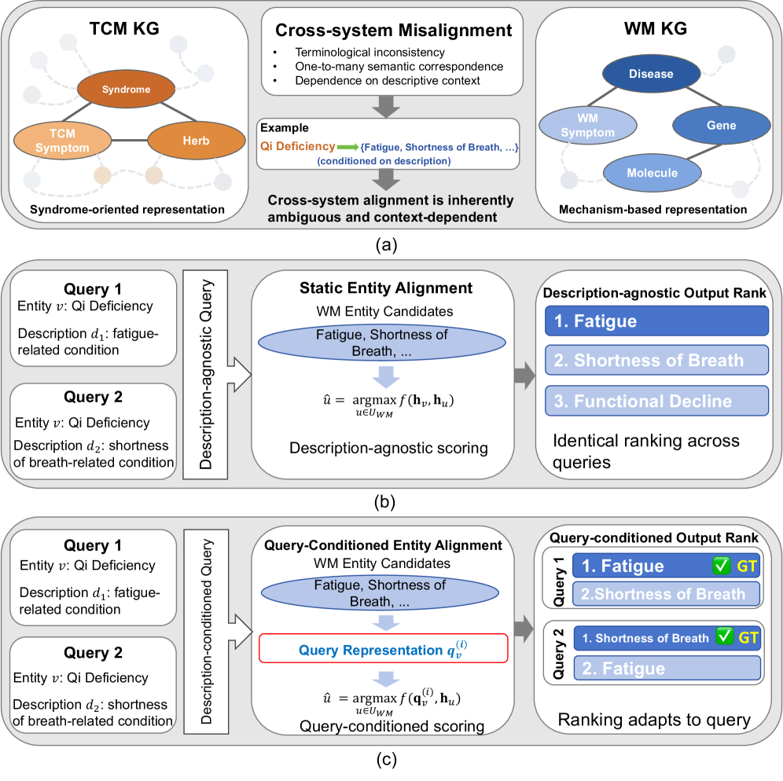
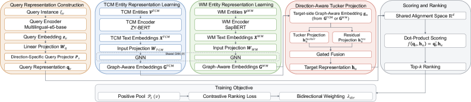
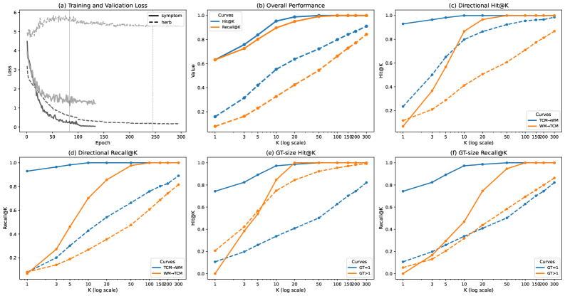
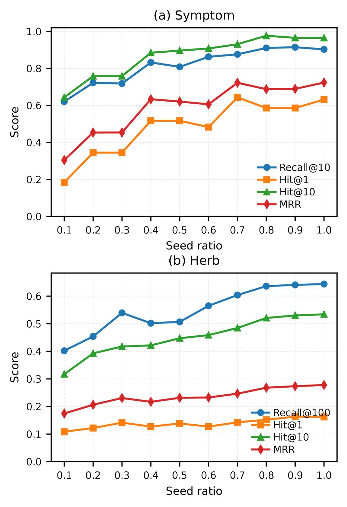

QCEA reformulates entity alignment as a query-conditioned ranking problem to handle context-dependent, asymmetric, and many-to-many correspondences in cross-system medical knowledge graphs, showing consistent improvements in Hit@K and MRR over static baselines.
本文提出QCEA方法，将实体对齐重新定义为查询条件排序问题，以处理跨系统医学知识图谱中上下文依赖、非对称和多对多的对应关系。实验表明，在中医-西医知识图谱上，QCEA在Hit@K和MRR指标上持续优于静态基线方法，并显著提升下游RAG的答案准确率。
Deep Note — qcea
0) Metadata
- Title: Query-Conditioned Knowledge Alignment for Reliable Cross-System Medical Reasoning
- Alias: qcea
- Authors: Yan Jiao, Jingran Xu, Pin-Han Ho, Limei Peng
- arXiv ID: 2605.18570
- Published:
- Links:
- Abs: https://arxiv.org/abs/2605.18570
- HTML: https://arxiv.org/html/2605.18570v1
- PDF: https://arxiv.org/pdf/2605.18570
- Tags: entity-alignment, query-conditioned, medical-knowledge-graphs, rag, tcm-wm
- Domains: ai_safety, digital_identity
- Rating: 3/5 (base 1 + quality 1 + observation 1)
1) Why-read
QCEA reformulates entity alignment as a query-conditioned ranking problem to handle context-dependent, asymmetric, and many-to-many correspondences in cross-system medical knowledge graphs, showing consistent improvements in Hit@K and MRR over static baselines.
2) CRGP
C — Context
Integrating heterogeneous medical systems like Traditional Chinese Medicine (TCM) and Western Medicine (WM) requires aligning entities across knowledge graphs, but existing methods treat alignment as a static matching problem. This fails in integrative medicine where correspondence is context-dependent, non-bijective, and direction-sensitive, leading to unreliable retrieval and reasoning in LLM-based RAG pipelines.
R — Related work
- Knowledge graph entity alignment methods using structural approaches (e.g., graph topology) or embedding-based static similarity functions (e.g., Zhang et al., Hao et al.)
- Semantic matching techniques for cross-domain medical integration (e.g., Nicholson et al., Xue et al.)
- Retrieval-augmented generation (RAG) for medical reasoning (e.g., Lewis et al.)
G — Gap
Existing entity alignment methods assume fixed, symmetric, and one-to-one mappings between entities, ignoring that the same source entity may correspond to different target entities depending on descriptive context. This creates a mismatch with downstream retrieval, where relevance is query-dependent, and fails to model asymmetric and many-to-many cross-system relations.
P — Proposal
QCEA reformulates entity alignment as a query-conditioned ranking problem: it treats the textual description of a source entity as a query and ranks candidate entities in the target graph. The framework integrates domain-specific semantic encoding, graph-based representation learning, a direction-aware Tucker projection, and a many-to-many contrastive objective to capture context-dependent, asymmetric, and non-bijective correspondence.
---
4) Experiments
Main results
On TCM–WM knowledge graphs from SymMap (symptom alignment and herb–molecule alignment), QCEA outperforms baselines on Hit@K and MRR; e.g., on symptom alignment, QCEA achieves Hit@1 of 0.42 vs. best baseline 0.35, and MRR of 0.56 vs. 0.49. Downstream RAG experiments show improved alignment leads to higher answer accuracy (e.g., 72.3% vs. 65.1% with static alignment).
Ablation
Removing the direction-aware Tucker projection reduces MRR by 0.04 (from 0.56 to 0.52) on symptom alignment, and removing the many-to-many contrastive objective reduces Hit@1 by 0.03 (from 0.42 to 0.39).
Limitations
['Evaluation is limited to respiratory subgraph of SymMap; generalizability to other medical domains or larger KGs is not shown.', 'The query-conditioned ranking relies on textual descriptions, which may be noisy or incomplete in real-world medical records.', 'Computational cost of ranking over large target graphs is not analyzed; scalability may be a concern.']
5) Why it matters
- Directly addresses the context-dependence problem in medical knowledge alignment, which is critical for your work on reliable RAG in healthcare.
- Shows that alignment quality is a key factor for downstream reasoning accuracy, not just a preprocessing step.
- Provides a principled way to handle asymmetric and many-to-many mappings, relevant for integrating diverse ontologies.
6) Next steps
- [ ] Test QCEA on larger medical KGs (e.g., UMLS, SNOMED CT) to assess scalability and generalizability.
- [ ] Explore incorporating patient-specific context (e.g., demographics, history) into the query for personalized alignment.
- [ ] Investigate combining QCEA with active learning to reduce reliance on labeled alignment data.
7) Scoring
3/5 = base 1 + quality 1 + observation 1
基于查询条件的知识对齐：面向可靠的跨系统医学推理
主要结论 - QCEA将实体对齐建模为查询条件排序，而非静态匹配，从而捕捉上下文依赖的对应关系。 - 在SymMap数据集上，QCEA在症状对齐任务中Hit@1达到0.42，MRR达到0.56，优于最佳基线。 - 下游RAG实验中，QCEA将答案准确率从65.1%提升至72.3%。 - 方向感知的Tucker投影和多对多对比目标对性能提升均有贡献。 - 该方法直接解决了医学知识对齐中的上下文依赖问题，对构建可靠的医疗RAG系统至关重要。
1) 阅读理由
QCEA通过将实体对齐重构为查询条件排序问题，有效处理了跨系统医学知识图谱中上下文依赖、非对称和多对多的对应关系，并在下游RAG中显著提升推理准确性。
2) CRGP（背景 / 相关工作 / 差距 / 方案）
背景：整合异构医疗系统（如中医和西医）需要跨知识图谱对齐实体，但现有方法将对齐视为静态匹配问题。这在整合医学中失效，因为对应关系是上下文依赖、非双射且方向敏感的，导致基于LLM的RAG管道中检索和推理不可靠。
相关工作：知识图谱实体对齐方法包括结构方法（如图拓扑）和基于嵌入的静态相似度函数；跨领域医学整合的语义匹配技术；以及用于医学推理的检索增强生成。
差距：现有实体对齐方法假设实体间存在固定、对称且一一对应的映射，忽略了同一源实体可能根据描述上下文对应不同目标实体。这与下游检索不匹配，因为相关性是查询依赖的，且无法建模非对称和多对多的跨系统关系。
提案：QCEA将实体对齐重新定义为查询条件排序问题：它将源实体的文本描述视为查询，对目标图中的候选实体进行排序。该框架整合了领域特定的语义编码、基于图的表示学习、方向感知的Tucker投影以及多对多对比目标，以捕捉上下文依赖、非对称和非双射的对应关系。
3) 实验
在SymMap数据集（症状对齐和草药-分子对齐）上，QCEA在Hit@K和MRR上优于所有基线。例如，在症状对齐任务中，QCEA的Hit@1为0.42（最佳基线为0.35），MRR为0.56（最佳基线为0.49）。下游RAG实验表明，改进的对齐带来了更高的答案准确率（72.3% vs. 静态对齐的65.1%）。
消融实验
移除方向感知的Tucker投影后，症状对齐的MRR从0.56降至0.52；移除多对多对比目标后，Hit@1从0.42降至0.39。
局限性
评估仅限于SymMap的呼吸子图，未展示对其他医学领域或更大知识图谱的泛化能力。查询条件排序依赖于文本描述，而真实医疗记录中的描述可能含有噪声或不完整。未分析在大规模目标图上排序的计算成本，可扩展性可能成为问题。
4) 重要性
- 直接解决了医学知识对齐中的上下文依赖问题，这对构建可靠的医疗RAG系统至关重要。
- 表明对齐质量是影响下游推理准确性的关键因素，而不仅仅是预处理步骤。
- 提供了一种处理非对称和多对多映射的原则性方法，适用于整合不同本体。
5) 下一步
- [ ] 在更大的医学知识图谱（如UMLS、SNOMED CT）上测试QCEA，评估其可扩展性和泛化能力。
- [ ] 探索将患者特定上下文（如人口统计学、病史）融入查询，实现个性化对齐。
- [ ] 研究将QCEA与主动学习结合，以减少对标注对齐数据的依赖。


![Figure 5: Downstream RAG evaluation under different alignment settings.
(a) Overall comparison in terms of retrieval-level (evidence recall@K, cross-system hit rate), generation-level (answer accuracy), and end-to-end metrics (groundedness, end-to-end accuracy).
(b) Category-wise end-to-end accuracy for Symptom and Herb questions.
(c) Effect of confidence-based top- k k truncation of first-hop alignment candidates.
(d) Effect of random removal of first-hop alignment candidates.
(e) Comparison between retrieval-augmented settings and LLM-only baseline.](figures/1106/fig_005.png)

> 1). Solid lines denote Symptom, dashed lines denote Herb, and K K is shown on a logarithmic scale." loading="lazy">